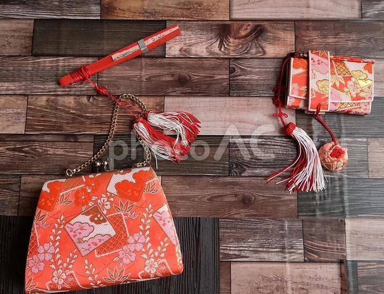
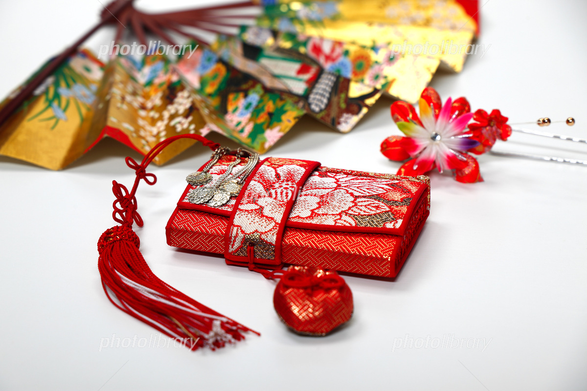
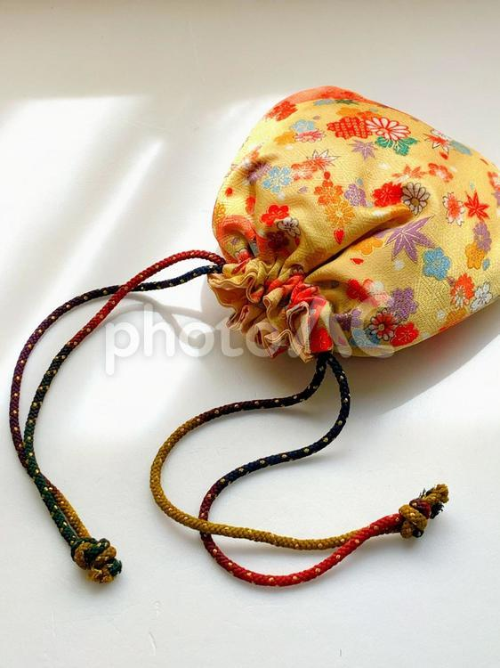

むすびや
Musubiya
-あなたのそばに-
和風小物


-あなたのそばに-
和風小物
About Us
When it comes to small items made from remade traditional Japanese clothing, it's Musubiya.
Loved by many, we have been in business for twenty years.
We offer more than 50 unique products each month.
Even if you no longer wear it,
remaking stylish kimonos
and giving them a new life
is our role at Musubiya.

～お客様から頂いた「声」を元にしております～
先日祖母の誕生日の記念品で利用しました。こぼれるような笑顔に ほっこり心が温まりました。ラインナップが豊富なので選んでいる時間がたっぷり、とても充実 した時間を過ごせるのも嬉しいです。和カフェ・和菓子喫茶店巡りのときにむすびやの財布を 取り出すとき、買ってよかったとしみじみ感じます。
ニューヨーク在住ですが、日本独特の繊細な美を手にできるネットショッピングが趣味です。 日本へ旅行した際、着物を着て和の息吹を感じながら散策をしているときに、むすびや商品のサコッシュがとてもお気に入りでした。 コレクションにしてインテリアと一緒に飾り付けにするのも楽しいです。
季節ごとに移ろう四季を感じるデザインのメッセージカードに いつも目を奪われます。日本の寺社仏閣がモチーフにされたお写真と添えられている文章に 味があります。和服老舗店舗さんとのコラボ企画も情熱が伝わってきて、 何回もリピートしています。商品の梱包も丁寧で選んで良かったといつも思います。
むすびや20周年記念。送料無料のキャンペーン開催中！
2026.2.1
京都府西陣織老舗○○○商店様とのコラボ商品販売。どれも一点ものなのでお買い物はお早めに。
2026.1.15
明けましておめでとうございます。毎月変わる恒例のパッケージデザイン、今月は午年（うまどし）を記念にしたラッピングです。
2026.1.4
Q.商品の返品・交換はできますか？
A.ご注文の商品とお届けした商品が異なっていたり、お届けした商品が破損していた場合は 、商品到着日より7日以内にご連絡をお願いいたします。 なお、お客様のご都合による返品・交換は承っておりませんので、予めご了承下さい。
Q.配送料はいくらですか？
A.配送料は配達する地域やご注文金額、配送手段によって異なります。
クロネコゆうパケットの場合：全国一律360円（税込み）
Q.商品のお届け方法を教えてください。
A.ヤマト運輸のクロネコゆうパケットにてお届けします。
Q.自宅以外に商品を届けることは可能ですか？
A.可能です。お届け先住所を設定する際にご希望のお届け先を指定してください。
Q.注文後に支払い方法を変更することはできますか？
A.ご注文完了後にお支払方法を変更することはできません。予めご了承下さい。
※お問い合わせの内容により、こちらからの対応にお時間を頂戴する等でお電話を差し上げる場合がございます。 あらかじめご了承ください。
※メッセージ送信後、一週間以内にこちらからのお返事がない場合、メールシステムの一時的な障害や、 ご入力いただいたメールアドレスの間違い等が考えられます。お手数ですが、お電話にてご連絡ください。
※Gmailなどのフリーメールでご連絡頂いた場合、自動返信メールが迷惑フォルダに振り分けられる 場合がございます。フリーメールをご利用の方は、念のため迷惑フォルダのご確認もお願い致します。
【受付時間】平日9:00～16:30
土曜・日曜・祝日、夏季休暇や年末年始などは休みをいただいております。
世界にひとつだけの職人技の和風小物。
身につけると、よりぐんと増すリッチさ。
ぜひあなただけの特別な一点ものを
探してみてください。